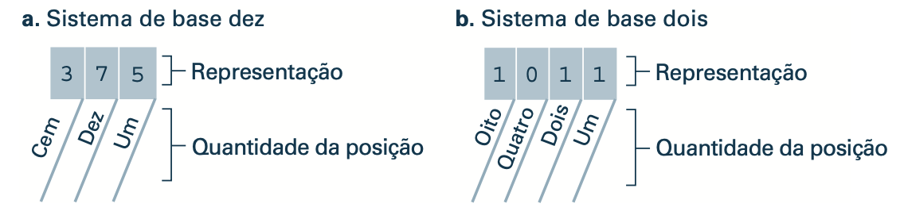
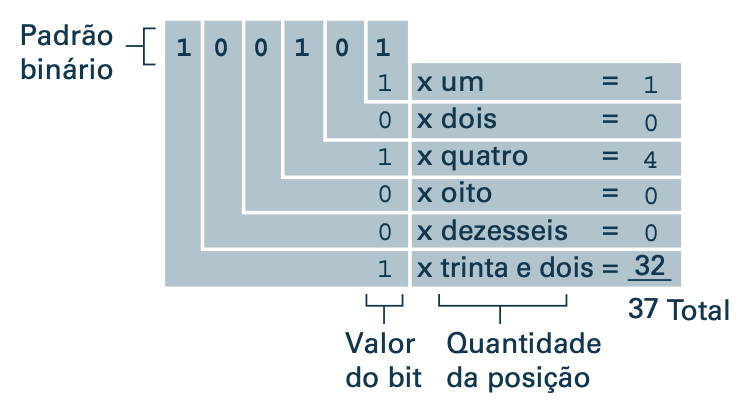

O sistema binário
No sistema de base dez, cada posição em uma representação está associada com uma quantidade.
A posição de cada dígito na notação binária está associada também com uma quantidade, exceto que a quantidade associada com cada posição é duas vezes a quantidade associada com a posição à sua direita.

Fig. 1.15 Sistema de base dez e sistema binárioPara extrair o valor representado por uma representação binária, seguimos o mesmo procedimento usado com a base dez – multiplicamos o valor de cada dígito pela quantidade associada com sua posição e adicionamos os resultados. Por exemplo, o valor representado por 100101 é 37.

Fig. 1.16 Decodificação da representação binária 100101.Aritmética Binária
Assuntos:
- Soma binária
- Complemento de um
- Complemento de dois
- Ponto fixo
- Ponto flutuante
Podemos utilizar números binários para codificar qualquer tipo de dado, como vimos na teoria de dados digitais. Mas ainda não sabemos como utilizar números binários para representar: números inteiros que possam ser negativos e números reais fracionados (exemplo: -15; 1.032; -0.0001; 10001231231).
Essa teoria irá tratar desses temas e também da parte referente a operações com números binários (soma e subtração).
Soma binária
A soma binária é realizada de maneira similar a soma de decimais, só que precisamos reforçar que 1 + 1 em binário (esse + é de soma não de OR), resulta em 10, o 1 do estouro e que passa para a próxima casa é chamado de carry. Esse carry é similar ao vai um em uma soma decimal, por exemplo: quando somamos em decimal 9 + 3 o resultado é 12 (10 + 2).
Exemplos a seguir consideram
- Palavras binárias com 8 bits
- Números inteiros positivos
Dica
01 + 01 = 1001 + 01 + 01 = 1110 + 10= 100
0xAA + 0x55 = 0xFF
: Carry
1 0 1 0 1 0 1 0 : A
0 1 0 1 0 1 0 1 + : B
---------------
1 1 1 1 1 1 1 1 : Resultado (A+B)
0xAA + 0x55 = 0xFF
: Carry
1 0 1 0 1 0 1 0 : A
0 1 0 1 0 1 0 1 + : B
---------------
1 1 1 1 1 1 1 1 : Resultado (A+B)
0x2B + 0x57 = 0xFF
1 1 1 1 1 1 1 : Carry
0 0 1 0 1 0 1 1 : A
0 1 0 1 0 1 1 1 + : B
---------------
1 0 0 0 0 0 1 0 : Resultado (A+B)
Precisamos entender que cada bit deve ser armazenado em hardware! Um sistema com 8 bits não consegue armazenar 9 bits, e se houver um estouro no último bit essa informação será perdida.
Nota
Os bits são armazenados na memória, as memórias armazenam vetores de bits. Computadores reais não possuem memória infinita e nem largura de bits infinita.
0x80 + 0x80 = 0x100, mas resulta em0x00por conta do somador ser8bits:
carry é perdido
x
\
1 0 0 0 0 0 0 0
1 0 0 0 0 0 0 0 +
---------------
0 0 0 0 0 0 0 0
0x03 + 0x81 = 0x84
1 1 : carry (vai um)
\
0 0 0 0 0 0 1 1
1 0 0 0 0 0 0 1 +
---------------
1 0 0 0 0 1 0 0
Complemento de um
Atenção!
Forma errada/não usual de armazenar números sinalizados (+ ou -)
Exemplos a seguir consideram
- Palavras binárias com
8bits - Números inteiros positivos
No complemento de um, utilizamos a casa/bit mais significativa de um vetor de bits para representar se o número é positivo (0) ou negativo (1). Exemplo (utilizando 8 bits):
- Valor
+1em binário, com complemento de1
00000001
^
| indica que o valor é positivo
- Valor -1 em binário, com complemento de 1
10000001
^
| indica que o valor é negativo
O problema do complemento de 1 é que:
- Possuímos duas representações para o valor
0:00000000e10000000 - Operações de soma não funcionam corretamente entre os dois números codificados em complemento de um.
- Exemplo:
1 - 1 = -2e não0
1 : carry (vai um)
\
0 0 0 0 0 0 0 1 : +1
1 0 0 0 0 0 0 1 + : -1
---------------
1 0 0 0 0 0 1 0 : -2 e não 0
- Tabela com 3 bits
| Decimal | Binário em complemento de 1 |
|---|---|
| 3 | 011 |
| 2 | 010 |
| 1 | 001 |
| 0 | 000 / 100 |
| -1 | 101 |
| -2 | 110 |
| -3 | 111 |
Complemento de 2
O complemento de dois é uma outra maneira de representar números sinalizados com bits, essa técnica possui alguams vantagens:
- Uma única representação para o valor
0:0000 - A operação de soma/subtração funciona corretamente!
- O bit mais significativo indica se a palavra é positiva (
0) ou negativa (1).
Para obter um número positivo ↔ negativo nessa notação é necessário seguir os seguintes passos:
- Escreva o valor em binário (positivo)
- Inverter todos os bits (not bit a bit) da palavra original
-
Somar o valor 1 a palavra invertida.
-
Exemplo:
-3 = 11111101
0 0 0 0 0 0 1 1 : 3
-----------------------
1 1 1 1 1 1 0 0 : not bit a bit da palavra original
0 0 0 0 + 1 : Soma um a palavra invertida
-----------------------
1 1 1 1 1 1 0 1 <-- -3 em complemento de 2
- Exemplo:
-5 = 111111011
0 0 0 0 0 1 0 1 : 5
-----------------------
1 1 1 1 1 0 1 0 : not bit a bit da palavra original
0 0 0 0 0 0 0 1 + : Soma um a palavra invertida
-----------------------
1 1 1 1 1 0 1 1 <-- -5 em complemento de 2
- Exemplo (com 4 bits para simplificar): -9 (não funciona porque não cabe)
(exemplo com 4 bits!)
1 0 0 1 : 9
0 1 1 0 : not bit a bit da palavra original
+ 1 : Soma um a palavra invertida
0 1 1 1 <-- 7 !! (não funcionou)
^
| não funcionou =(
O exemplo anterior não funciona pois faltam bits para representar o valor -9, para isso seria necessário 5 bits e não 4 como no exemplo.
- Tabela com 3 bits
| Decimal | Binário em complemento de 2 |
|---|---|
| 3 | 011 |
| 2 | 010 |
| 1 | 001 |
| 0 | 000 |
| -1 | 111 |
| -2 | 110 |
| -3 | 101 |
| -4 | 100 |
Multiplicação/Divisão por múltiplo de 2
Assumindo
- Um número positivo
Em binário, para multiplicar uma palavra (positiva) por 2 basta rotacionar todos os bits uma casa para esquerda. Para dividir por 2 basta rotacionar todos os bits uma vez para direita (sempre colocando 0 no bit que entra e desaparecendo com o bit que sai).
Exemplos a seguir:
- 2 x 1 (
00000001) = 200000010
<-- 1x
00000001 => 00000010
- 2 x 4 (
00000100) = 800001000
<-- 1x
00000100 => 00001000
- 9 (
00001001) / 2 = 400000100
1x -->
00001001 => 00000100
Nota
A divisão de 9/2 retorna um número inteiro. Isso se dá devido a técnica só funcionar com números inteiros.
Essa técnica de rotacionar vale para múltiplos de 2, se deseja multiplicar/dividir por M, onde M é um múltiplo de 2 (M = N x 2), é necessário rotacionar o vetor de bits N vezes:
- exemplo: 4 x 1 (00000001) = 00000100
<-- 2x
00000001 => 00000100
Ponto fixo
Ponto fixo é uma das técnicas de representação de números fracionados em binário, nessa notação fixasse quantos bits serão utilizados para a parte inteira e quantos serão utilizados para a fração. É aplicado o mesmo conceito dos números decimais, as casas a direita do ponto possuem peso na ordem \(2^{-n}\).
Vamos pegar como exemplo o valor 26.5, e assumindo que estamos trabalhando com uma palavra de 8 bits onde o ponto está localizado no bit 3: XXXXX.YYY.
Nesse caso, cada casa binária possui o peso a seguir:
| \(2^5\) | \(2^4\) | \(2^3\) | \(2^2\) | \(2^1\) | \(2^0\) | \(2^{-1}\) | \(2^{-2}\) | \(2^{-3}\) |
|---|---|---|---|---|---|---|---|---|
| 32 | 16 | 8 | 4 | 2 | 1 | 0.5 | 0.25 | 0.125 |
Para construirmos o valor 26.5 basta selecionarmos os bits que somados dão esse valor:
011010100 : 0*32 + 1*16 + 1*8 + 0*4 + 1*2 + 0*1 + 1*0.5 + 0*0.025 + 0*0.125 = 26.5
A questão dessa notação é que uma vez escolhido onde o ponto vai estar localizado (projeto de hardware) não da para mudar depois, se o número a ser armazenado é apenas fração, perdemos muitos bits sem uso com a parte inteira, o que faz possuirmos menor resolução.
A solução para isso é a notação de ponto flutuante - IEEE 754 (vocês deverão ver isso na disciplina de Sistemas).
Ponto flutuante
Ponto flutuante é uma outra notação na qual é possível representar números racionais digitalmente (binário), nessa técnica a vírgula não é fixa, e a notação pode se adequar para armazenar números muito trandes ou muito pequenos. No entanto, existe um custo computacional mais elevado envolvido nisso.
Processadores modernos possuem um hardware (ULA) dedicada a realizar operações em ponto flutuante, normalmente usando o padrão IEEE 754.
Referências
- Corsi. R. Elementos de Sistemas. Disponível em: https://insper.github.io/Z01.1/Teoria-Aritmetica-Binaria/. Acesso em: 11 ago. 2021.